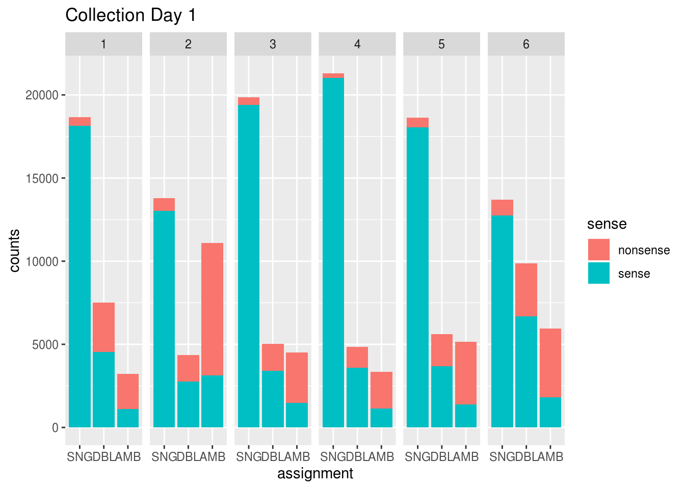
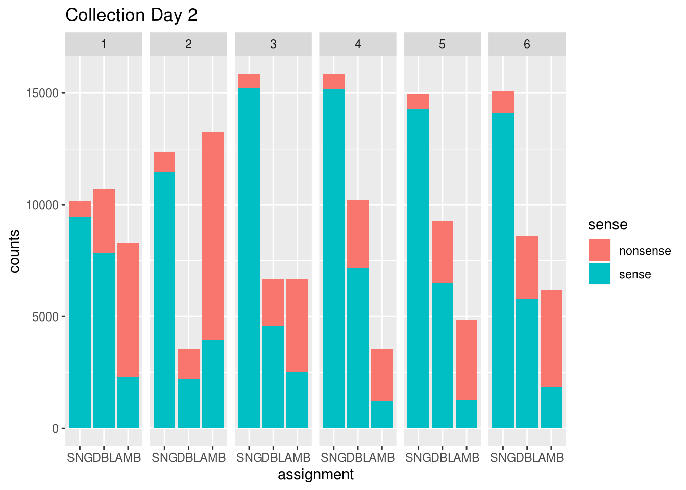
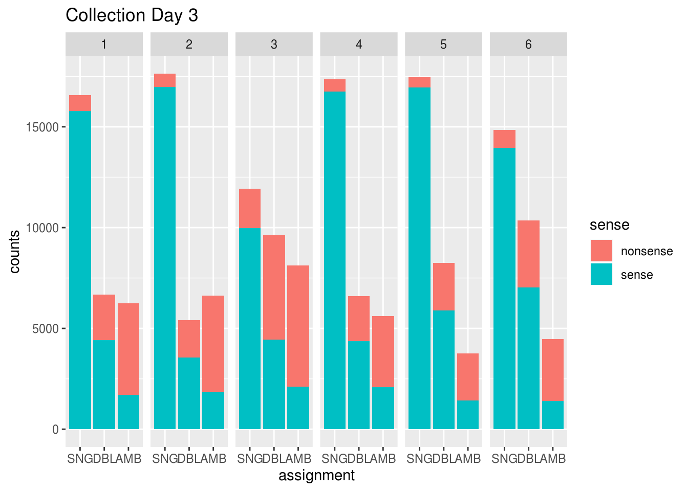

Last updated: 2019-12-12
Checks: 6 1
Knit directory: SC_Cardiomyocyte/
This reproducible R Markdown analysis was created with workflowr (version 1.5.0). The Checks tab describes the reproducibility checks that were applied when the results were created. The Past versions tab lists the development history.
The R Markdown is untracked by Git. To know which version of the R Markdown file created these results, you’ll want to first commit it to the Git repo. If you’re still working on the analysis, you can ignore this warning. When you’re finished, you can run wflow_publish to commit the R Markdown file and build the HTML.
Great job! The global environment was empty. Objects defined in the global environment can affect the analysis in your R Markdown file in unknown ways. For reproduciblity it’s best to always run the code in an empty environment.
The command set.seed(20191212) was run prior to running the code in the R Markdown file. Setting a seed ensures that any results that rely on randomness, e.g. subsampling or permutations, are reproducible.
Great job! Recording the operating system, R version, and package versions is critical for reproducibility.
Nice! There were no cached chunks for this analysis, so you can be confident that you successfully produced the results during this run.
Great job! Using relative paths to the files within your workflowr project makes it easier to run your code on other machines.
Great! You are using Git for version control. Tracking code development and connecting the code version to the results is critical for reproducibility. The version displayed above was the version of the Git repository at the time these results were generated.
Note that you need to be careful to ensure that all relevant files for the analysis have been committed to Git prior to generating the results (you can use wflow_publish or wflow_git_commit). workflowr only checks the R Markdown file, but you know if there are other scripts or data files that it depends on. Below is the status of the Git repository when the results were generated:
Ignored files:
Ignored: data/demuxlet_data.RData
Untracked files:
Untracked: analysis/demuxlet_analysis.Rmd
Untracked: code/demuxlet_dataload.R
Unstaged changes:
Modified: .gitignore
Note that any generated files, e.g. HTML, png, CSS, etc., are not included in this status report because it is ok for generated content to have uncommitted changes.
There are no past versions. Publish this analysis with wflow_publish() to start tracking its development.
This notebook runs through some checks for quality control of Demuxlet results.
Before running through this, make sure to run demuxlet_dataload.R from the code folder, as this gets us the raw data that we’ll be using for this analysis.
First, we load necessary libraries and pull the data that file saved
library(sjmisc)
library(ggplot2)
library(plyr)
library(reshape2)load("./data/demuxlet_data.RData")Now, if we fed Demuxlet more info than necessary (ie, included genotypes of individuals that are not present in the collection), we want to take a look at how frequently demuxlet assigned cells to those absent individuals.
To do so, we first create a dataframe which will tell us (for each collection) the number of assignments to singlet, ambiguous, or doublet, as well as sense (all present individuals) or nonsense (assigned to absent individual)
collex <- c()
for (colday in 1:3) {
for (collection in 1:6) {
collex <- c(collex, paste0("CD", colday, "col", collection))
}
}
counts <- data.frame(row.names=collex)
counts$singlet_sense <- rep(0, nrow(counts))
counts$singlet_nonsense <- rep(0, nrow(counts))
counts$amb_sense <- rep(0, nrow(counts))
counts$amb_nonsense <- rep(0, nrow(counts))
counts$doublet_sense <- rep(0, nrow(counts))
counts$doublet_nonsense <- rep(0, nrow(counts))Next, to fill in this dataframe we create a function that takes in a demuxlet assignment (eg SNG-NA18912) and returns info about the assignment that is easier to use (eg (SNG, 18912)).
get_inds <- function(s) {
if (substr(s, 1, 3) == "SNG") {
ind <- substr(s, 7, 11)
return(c("SNG", ind))
} else if (substr(s, 1, 3) == "DBL") {
ind1 <- substr(s, 7, 11)
ind2 <- substr(s, 15, 19)
return(c("DBL", ind1, ind2))
} else if (substr(s, 1, 3) == "AMB") {
ind1 <- substr(s, 7, 11)
ind2 <- substr(s, 15, 19)
ind3 <- substr(s, 23, 27)
ind4 <- substr(s, 31, 35)
amb <- sort(c(ind1, ind2, ind3, ind4))
amb <- amb[!duplicated(amb)]
return(c("AMB", amb))
}
}Now, we fill in the dataframe. For each collection, we first decide which individuals are absent so that we can label these assignments as nonsense. From there, we read the collection’s demuxlet table and fill in the dataframe accordingly.
for (colday in 1:3) {
for (collection in 1:6) {
if (collection == 1) {
absent <- c("18508", "18511", "18858", "18520")
} else if (collection == 2) {
absent <- c("19093", "18511", "18912", "18508")
} else if (collection == 3 ) {
absent <- c("19093", "18858", "18520", "18511")
} else if (collection == 4 ) {
absent <- c("18858", "18912", "18508", "19093")
} else if (collection == 5 ) {
absent <- c("18520", "18912", "18511", "18858")
} else if (collection == 6 ) {
absent <- c("18520", "18508", "19093", "18912")
}
# subset since day 0 cells make colday 3 diff from days 1 and 2
if ((colday == 1) || (colday == 2)) {
absent <- head(absent, -1)
} else if (colday == 3) {
absent <- absent[c(1,2,4)]
}
demux <- eval(as.name(paste0("CD", colday, "col", collection, "_demux")))
this.col <- (colday-1)*6 + collection
for (i in 1:nrow(demux)) {
inds <- get_inds(demux$BEST[i])
nonsense = !is_empty(intersect(inds, absent))
dbl = inds[[1]] == "DBL"
amb = inds[[1]] == "AMB"
sng = inds[[1]] == "SNG"
if (dbl & nonsense) {
counts$doublet_nonsense[this.col] <- counts$doublet_nonsense[this.col] + 1
} else if (dbl & !nonsense) {
counts$doublet_sense[this.col] <- counts$doublet_sense[this.col] + 1
} else if (amb & nonsense) {
counts$amb_nonsense[this.col] <- counts$amb_nonsense[this.col] + 1
} else if (amb & !nonsense) {
counts$amb_sense[this.col] <- counts$amb_sense[this.col] + 1
} else if (sng & nonsense) {
counts$singlet_nonsense[this.col] <- counts$singlet_nonsense[this.col] + 1
} else if (sng & !nonsense) {
counts$singlet_sense[this.col] <- counts$singlet_sense[this.col] + 1
} else {
print(paste0("Oops, something's wrong, can't handle", inds))
}
}
}
}
counts$colday <- factor(substr(row.names(counts), 3, 3), levels=c("1", "2", "3"))
counts$collection <- factor(substr(row.names(counts), 7, 7), levels=c("1", "2", "3", "4", "5", "6"))Now that we have our dataframe, we need to reshape it in a way that makes visualization easier
counts2 <- melt(counts, id=c("collection", "colday"), value.name="counts")
counts2$assignment <- NA
counts2$sense <- NA
counts2[counts2$variable %in% c("singlet_sense", "singlet_nonsense"),]$assignment <- "SNG"
counts2[counts2$variable=="singlet_sense",]$sense <- "sense"
counts2[counts2$variable=="singlet_nonsense",]$sense <- "nonsense"
counts2[counts2$variable %in% c("amb_sense", "amb_nonsense"),]$assignment <- "AMB"
counts2[counts2$variable=="amb_sense",]$sense <- "sense"
counts2[counts2$variable=="amb_nonsense",]$sense <- "nonsense"
counts2[counts2$variable %in% c("doublet_sense", "doublet_nonsense"),]$assignment <- "DBL"
counts2[counts2$variable=="doublet_sense",]$sense <- "sense"
counts2[counts2$variable=="doublet_nonsense",]$sense <- "nonsense"
counts2 <- counts2[,!colnames(counts2)=="variable"]
counts2$assignment <- factor(counts2$assignment, levels=c("SNG", "DBL", "AMB"))
counts2$sense <- factor(counts2$sense, levels=c("nonsense", "sense"))Now that our dataframe is ready for plotting, we can subset for each collection day (there are 6 collections over 3 collection days) and take a look
cd1 <- counts2[counts2$colday == 1,!colnames(counts2)=="colday"]
ggplot(cd1, aes(x = assignment, y = counts, fill = sense)) +
geom_bar(stat = 'identity', position = 'stack') + facet_grid(~collection) +
ggtitle("Collection Day 1")
cd2 <- counts2[counts2$colday == 2,!colnames(counts2)=="colday"]
ggplot(cd2, aes(x = assignment, y = counts, fill = sense)) +
geom_bar(stat = 'identity', position = 'stack') + facet_grid(~collection) +
ggtitle("Collection Day 2")
cd3 <- counts2[counts2$colday == 3,!colnames(counts2)=="colday"]
ggplot(cd3, aes(x = assignment, y = counts, fill = sense)) +
geom_bar(stat = 'identity', position = 'stack') + facet_grid(~collection) +
ggtitle("Collection Day 3")
sessionInfo()R version 3.6.1 (2019-07-05)
Platform: x86_64-pc-linux-gnu (64-bit)
Running under: Scientific Linux 7.4 (Nitrogen)
Matrix products: default
BLAS/LAPACK: /software/openblas-0.2.19-el7-x86_64/lib/libopenblas_haswellp-r0.2.19.so
locale:
[1] LC_CTYPE=en_US.UTF-8 LC_NUMERIC=C
[3] LC_TIME=en_US.UTF-8 LC_COLLATE=en_US.UTF-8
[5] LC_MONETARY=en_US.UTF-8 LC_MESSAGES=en_US.UTF-8
[7] LC_PAPER=en_US.UTF-8 LC_NAME=C
[9] LC_ADDRESS=C LC_TELEPHONE=C
[11] LC_MEASUREMENT=en_US.UTF-8 LC_IDENTIFICATION=C
attached base packages:
[1] stats graphics grDevices utils datasets methods base
other attached packages:
[1] reshape2_1.4.3 plyr_1.8.4 ggplot2_3.2.1 sjmisc_2.8.1
loaded via a namespace (and not attached):
[1] Rcpp_1.0.3 pillar_1.4.2 compiler_3.6.1 later_1.0.0
[5] git2r_0.26.1 workflowr_1.5.0 forcats_0.4.0 tools_3.6.1
[9] zeallot_0.1.0 digest_0.6.21 evaluate_0.14 tibble_2.1.3
[13] gtable_0.3.0 pkgconfig_2.0.3 rlang_0.4.0 yaml_2.2.0
[17] haven_2.1.1 xfun_0.8 withr_2.1.2 dplyr_0.8.3
[21] stringr_1.4.0 knitr_1.23 fs_1.3.1 vctrs_0.2.0
[25] hms_0.5.0 sjlabelled_1.1.0 rprojroot_1.3-2 grid_3.6.1
[29] tidyselect_0.2.5 glue_1.3.1 R6_2.4.0 rmarkdown_1.13
[33] purrr_0.3.2 magrittr_1.5 backports_1.1.5 scales_1.0.0
[37] promises_1.1.0 htmltools_0.4.0 assertthat_0.2.1 insight_0.4.0
[41] colorspace_1.4-1 httpuv_1.5.2 labeling_0.3 stringi_1.4.3
[45] lazyeval_0.2.2 munsell_0.5.0 crayon_1.3.4